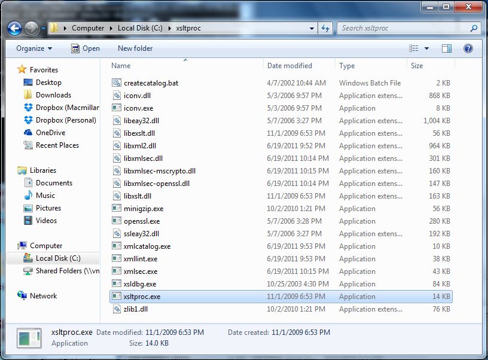
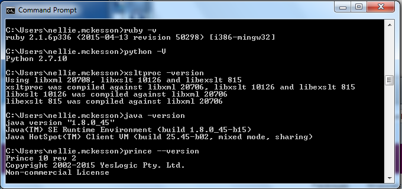

For the sake of speed, the installer is going to assume you are working in your C: drive. If you aren't, you'll need to follow the manual instructions over at INSERTLINK.
For the following steps, please install Python, Ruby, and saxon in C: at the top level.
Download this file: https://www.python.org/ftp/python/2.7.10/python-2.7.10.msi
Double click to open the installer and follow the prompts. Make note of the location where python is being installed (the installer typically suggests C:\Python27, which is exactly where we need it to be).
Download this file: http://dl.bintray.com/oneclick/rubyinstaller/rubyinstaller-2.1.6.exe
Double click to open the installer and follow the prompts. Make a note of where Ruby is being installed (the installer typically suggests C:\Ruby21, which is exactly where we need it to be).
Go here: ftp://ftp.zlatkovic.com/libxml/ and download these 7 files:
iconv-1.9.2.win32.zip libxml2-2.7.8.win32.zip libxmlsec-1.2.18.win32.zip libxslt-1.1.26.win32.zip openssl-0.9.8a.win32.zip xsldbg-3.1.7.win32.zip zlib-1.2.5.win32.zip
Create a folder in C: called xsltproc. Within each of the above 7 folders, copy all the files that are in the bin folder into your new xsltproc folder. Once you've done all 7, you should a folder full of stuff, that looks like this:

Download and install the Java jdk: http://download.oracle.com/otn-pub/java/jdk/8u45-b15/jdk-8u45-windows-i586.exe.
Make note of the installation location and make sure it looks like this: C:\Program Files (x86)\Java\jre1.8.0_45\bin. If it doesn't match this, then you'll need to update the Java path in the "Update Your PATH" step below.
In C:, create a new folder called saxon.
Download Saxon HE: http://sourceforge.net/projects/saxon/files/latest/download?source=files. Extract the contents of the folder to your new saxon folder.
Download the Prince ZIP: http://www.princexml.com/download/prince-10r2-windows.zip.
Create a new folder in C: called prince, and extract all the contents of the prince zip file to this folder.
Update your path variable to include Python, Ruby, xsltproc, Java, and Prince. In Command Prompt, type:
setx PATH "C:\Python27;C:\xsltproc;C:\Ruby21\bin;C:\Program Files (x86)\Java\jdk1.8.0_45\bin;C:\prince\bin;"
Close Command Prompt and then reopen it. Now let's make sure everything works so far. If you get any messages like "command is not recognized," that means something went wrong and you'll need to do some troubleshooting.
Make sure ruby is installed correctly by typing:
ruby -v
Make sure python is installed correctly by typing:
python -V
Make sure xsltproc is installed correctly by typing:
xsltproc -version
Make sure java is installed correctly by typing:
java -version
Make sure prince is installed correctly by typing:
prince --version
You should get results like these:

Download the Ruby Development Kit: http://dl.bintray.com/oneclick/rubyinstaller/DevKit-mingw64-32-4.7.2-20130224-1151-sfx.exe.
Double click to open the installer and follow the prompts. When prompted to choose a location to extract the files, click the "..." button, and select "C:\DevKit" (you'll need to create the DevKit folder by clicking "Make New Folder").
Click "OK", and then "Extract" to extract the files.
Now in Command Prompt, enter the following commands:
chdir C:\DevKit
ruby dk.rb init
ruby dk.rb install
Now install a ruby gem that bookmaker will be using. In Command Prompt, type the following:
gem install doc_raptor
Next, make a folder where you want to run bookmaker, download these two zip files and put them inside it:
https://github.com/oreillymedia/HTMLBook/archive/master.zip
https://www.dropbox.com/s/4mvvx84bludrgra/bookmaker-master_WIN.zip?dl=0
Extract the contents of both zip files to the following folders at the top level of your bookmaker folder: "bookmaker-master", "HTMLBook-master". Make sure that when you extracted the files, Windows didn't add an extra subfolder. The folder structure should look like this: YourFolder/bookmaker-master/[a bunch of files...]
Now let's run the installer to get everything up and running. We're going to use some preset folder and config settings, just for the sake of time, but everything is configurable--you can see the full docs at http://github.com/macmillanpublishers.com/bookmaker. TIP: You can just drag the install.rb file onto your Command Prompt window instead of typing the full path.
ruby /path/to/install.rb
That's it, my friend. It is done. Use the new "convert" folder to put your files for conversion, and the finished files will show up in the "done" folder.
Oh, except if you want to enable epub image processing, you should also install image magick: http://cactuslab.com/imagemagick/. But this isn't required and we have it turned off by default.